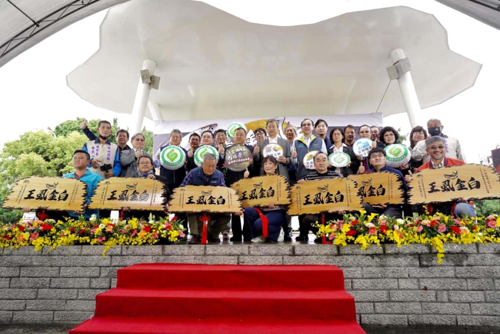

讓好水產，
在搜尋裡被看見。
消費者還不認識和畝時，不會先搜尋品牌，而是先問「虱目魚怎麼挑、哪裡買、怎麼煮、安不安心」。這份提案要做的，是讓和畝在這些問題出現時被找到、被理解、被選擇。

客人還不知道和畝時，Google 與 AI 就是認識品牌的第一個入口
搜尋不是只為了「排名第一」，而是在消費者有需要、正在找答案的那一刻，讓和畝有機會出現在他的選擇名單裡。
產生需求
想買虱目魚、準備晚餐、找安心海鮮，或規劃學校活動。
提出問題
到 Google 搜尋，或直接問 ChatGPT、Gemini 等 AI 工具。
比較答案
看產地、規格、料理方式、安心證據、評價與品牌故事。
建立信任
清楚的專業內容，讓消費者理解和畝與一般水產的差異。
採取行動
進入商品頁下單、加入 LINE 詢問，或提出教育與合作需求。
和畝不是從零開始，已經有四個難以複製的品牌資產
真正的機會，是把散落在官網、商品頁與外部介紹中的優勢，組成一套能被 Google、AI 與消費者理解的內容系統。
產地與傳承
台南北門、四代養殖與返鄉接班，讓「產地直送」是有根的品牌故事。
品質與驗證
白金虱王、產銷履歷、輸歐盟經驗與水產品溯源，提供消費者在意的安心證據。
生態養殖
益生菌應用能形成與低價進口水產不同的價值敘事。
社會影響
偏鄉食魚教育、青年返鄉與地方創生，讓品牌也能承接團體與企業合作。
公開資料來源：和畝水產官網、台灣地方創生基金會品牌介紹、農業部漁業署白金虱王資料。本頁僅整理可公開驗證的品牌資產。
現在的缺口，不是沒有故事，而是故事還沒有接到搜尋與下單
品牌名稱分散
和畝水產、萊鯷漁產、Lati Seafood、Homoo Seafood 同時出現，搜尋引擎與消費者都需要更一致的主品牌關係。
商品頁資訊偏薄
多數頁面以規格、價格與購買為主，尚未充分回答產地、養殖、料理、保存與品質證據。
可信證據沒有系統化
獲獎、驗證、食安與加工優勢存在，但沒有形成每個商品都能看到的固定信任模組。
內容與成交路徑斷開
品牌故事、食魚教育、商店與 LINE 各自存在，需要設計從搜尋問題到商品、禮盒或合作詢問的下一步。
- 官網已具備購物與商品分類
- 虱目魚、白蝦與加工品產品線清楚
- 品牌故事與聯絡資訊已有基礎
- 已有英文頁面與外部通路曝光
- 主品牌命名與搜尋結果一致性
- 首頁先說明選擇理由，不只陳列商品
- 商品頁補齊來源、驗證、料理與 FAQ
- 建立送禮與食魚教育獨立入口
- 哪些搜尋詞真正帶來進站
- 哪些商品頁被看、卻沒有下單
- 官網、LINE 與外部通路的轉換差異
- 節慶禮盒與教育詢問的來源品質
此為公開頁面層級的初步健檢；正式合作後需取得 Google Search Console、GA4、Tag Manager 與訂單／詢問紀錄，才能建立真實基準線。
一句話說明：把「客人正在問的問題」，做成「Google 與 AI 都讀得懂的答案」
不熟悉 SEO 也沒關係。整個過程只有四步，這份提案後面的每一個項目，都能對應到其中一步。
使用者搜尋
消費者帶著問題或需求，輸入關鍵字或直接問 AI。
Google 理解
搜尋引擎判斷哪些頁面最能回答這個問題、內容是否可信。
頁面被看見
內容完整、結構清楚的頁面，出現在搜尋結果或 AI 摘要中。
客人採取行動
點進網站、比較商品，然後下單、加 LINE 或詢問合作。
接住已經發生的需求
搜尋「虱目魚肚」「白蝦」「冷凍海鮮」的人，已經在找商品或答案。被搜尋到，就有機會在需求最明確的時候進入比較名單。
知道客戶真正怎麼說
關鍵字不是業者自己猜的題目，而是市場正在使用的語言。搜尋量能幫助判斷哪些頁面先做、哪些需求值得投入。
讓品牌資料能被理解與引用
AI 會整理公開網站裡清楚、可信、有結構的資訊。產地、驗證、養殖方式與專業解答越完整，品牌越有機會被摘要、引用與推薦。
| Google 廣告 | SEO（自然搜尋） | AI 摘要 | |
|---|---|---|---|
| 怎麼出現 | 付費買版位 | 內容與網站被判定為相關且可信 | 公開資料被理解並引用 |
| 見效速度 | 停止付費即消失 | 需要數月累積，但能持續 | 取決於資料完整度與可信度 |
| 和畝的角色 | 可作短期補強 | 本提案的主軸 | 與 SEO 內容同步受益 |
不是「做了禮盒」就有流量，而是回答送禮前的每一個問題
「水產禮盒」「海鮮禮盒」單一關鍵字搜尋量不大，但送禮者通常帶著明確期限、對象與採購條件。只要頁面能一次解答，他就更容易從搜尋直接進入詢問或下單。
送禮前會問的事
- 送長輩或客戶，海鮮禮盒怎麼選？
- 企業大量送禮可以客製包裝、分批配送嗎？
- 冷凍禮盒收到後怎麼保存？多久要送達？
- 台南有沒有具產地故事、送起來有意義的禮盒？
提出送禮問題 → 進入禮盒頁 → 看到情境式方案 → 確認產地、品質與交期 → 下單或 LINE 客製詢問
和畝已經有四代產地經驗、白金虱王、產銷履歷與食魚教育。缺的不是故事，而是把故事整理成搜尋看得懂的頁面。
把搜尋需求分成三條商業路徑，而不是把所有人都送進同一個商店首頁
承接虱目魚、白蝦與快速料理需求
用規格、保存、去刺、料理情境降低第一次購買阻力。
目標：商品瀏覽 → 加入購物車 → 完成訂單
承接年節、中秋、企業禮盒與客製
用產地故事、包裝與交期建立送禮信心。
目標：方案比較 → LINE 詢問 → 大宗／客製成交
承接食魚教育、校園體驗與企業 ESG
讓社會影響力成為另一條合作收入。
目標：了解服務 → 索取方案 → 安排合作
每一篇內容都要有下一步，但下一步不一定都是「立即購買」
搜尋問題
從料理、安心、送禮或體驗需求進站。
得到答案
先解決規格、保存、來源與情境疑問。
理解差異
看見養殖方式、驗證、獲獎與產地證據。
選擇方案
依人數、料理、預算或合作需求縮小選擇。
採取行動
下單、加 LINE、客製詢價或預約活動。
一般商品讓人快速下單；高單價禮盒與團體合作則先降低疑慮、再邀請諮詢。不要用同一顆 CTA 處理所有意圖。
用一個品牌核心，連接六組能成交的入口
官網不需要變得更複雜，而是需要更清楚：首頁建立差異、分類頁協助選擇、內容頁回答問題、商品或合作頁承接行動。
和畝水產｜台南北門的安心水產
產地 · 養殖 · 驗證 · 商品 · 送禮 · 教育
虱目魚專區
白金虱王、部位選擇、料理與商品。
白蝦與鮮魚
規格、養殖、保存與選購。
海鮮禮盒
節慶、企業、預算與客製。
安心證據
產銷履歷、溯源、檢驗與加工。
品牌故事
四代傳承、返鄉、永續與地方。
食魚教育
學校、團體、ESG 與合作案例。
三條路徑各自的優先頁面
- 虱目魚完整專區：部位、營養、產地、料理與商品入口
- 虱目魚粥與料理集群：做法、部位選擇與食材搭配
- 虱目魚肚／無刺虱目魚選購頁
- 白蝦與冷凍海鮮指南：尺寸、保存、退冰與份量
- 和畝海鮮禮盒總覽：依對象、份量與情境挑選
- 企業與團體客製：包裝、數量、交期與詢價流程
- 台南產地送禮故事：從北門漁塭到收禮者餐桌
- 節慶檔期頁：年前到貨、保存與熱門組合
- 食魚教育方案：年級、流程、時間與學習目標
- 北門漁村體驗：產地、加工與餐桌的完整路徑
- 企業 ESG／團體合作：可客製內容與成果紀錄
- 過往活動案例：學校、團體與國際接待紀錄
真實搜尋數據顯示：先搶下虱目魚與料理需求，再把流量帶向商品
以台灣、繁體中文、Google 搜尋為範圍，透過 Google Ads 關鍵字規劃工具查詢。高量需求主要落在虱目魚品類、粥品與料理情境，適合用主題專區承接。
平均月搜尋量
Google 關鍵字規劃工具回傳的近 12 個月平均值。屬市場需求指標，不等同和畝網站可直接取得的流量。
廣告競爭程度
代表廣告主競價的激烈程度（高／中／低），不等於 SEO 排名難度。
頁首出價上限
廣告主為搶到搜尋頁首位置願意支付的單次點擊價格，可粗略反映這個字的商業價值。
◆ 為建議第一階段先做的題目。「尚未取得」表示該欄位資料還沒查到，並非 0 或沒人搜尋。
先用大量需求建立入口，再用小量高價值需求承接成交
「虱目魚」是品牌的最大自然流量入口；「虱目魚粥／料理」擴大非品牌觸及；「虱目魚肚、無刺虱目魚、白蝦、冷凍海鮮」更接近選購與商品頁。送禮與教育題目搜尋量較小，但具有高客單或合作價值，應以轉換頁而非大量文章承接。
相近產業的實際成效：食品、禮盒與在地農產
以下三個案例都是食品類，與和畝一樣需要把「產品知識」接到「節慶送禮與官網訂單」。圖表為 Google Search Console 每月點擊，可以看到 SEO 的成效是逐步累積的。
資料來源：瑪卡鎷客戶成效戰情室。業績與訂單數字為客戶回饋或回報，個別成果不代表保證；每個案例的產業、起點與投入都不同。斜線長條為統計日（2026-09-15）當月，未滿月。
時程以「年」規劃，不是 90 天
從被 Google 收錄、測試排名，到建立信任，本來就需要時間。同業案例也顯示：萬福軒前 4 個月每月點擊僅 2 至 22 次，2026 年初起才明顯成長（見「成效案例」）。
文章篇數分配在整個合作期間，不是全部在第一年完成。各階段為規劃方向，將依數據調整；本提案不承諾特定排名或流量。
文章要寫給三種不同的客人
以三條成長路徑分配。以下為建議配置，可依想先做的方向調整。
| 路徑 | 承接的需求 | 一年方案 10 篇 | 兩年方案 15 篇 | 三年方案 20 篇 |
|---|---|---|---|---|
| 家庭餐桌搜尋量最大、最快帶來商品流量 | 魚種、部位、料理、保存 | 6 | 8 | 10 |
| 節慶送禮搜尋量小，但單次價值高 | 禮盒、企業客製、年節檔期 | 2 | 4 | 5 |
| 教育與合作差異化最強、競爭最低 | 食魚教育、校外教學、ESG | 2 | 3 | 5 |
第一批 10 篇會先寫這些（暫定）
依關鍵字市場數據排序，實際題目與順序於第一個月基準線完成後確認。
「—」表示該題目重點在品牌故事與差異，不以搜尋量排序；白金虱王與產銷履歷等信任證據，會同步放進各篇與商品頁。
三個方案，服務範圍相同，差別在年期與文章篇數
先看所有方案共同包含的服務，再比較各方案的差異。
網站與技術基礎
- 網站架構與 RWD 手機版
- 主機、資安與效能
- 全站 TDK 基礎優化
- 索引、轉址與結構化資料
搜尋與內容策略
- 關鍵字與長尾字布局
- 內容集群與內部連結
- SEO 文章製作與圖文編排
- 既有頁面更新與整併
成效與持續優化
- Google Search Console、GA4 設定
- 購物、LINE、電話與表單事件
- 定期成效檢視
- 依數據調整下一步
購物車、線上金流、會員系統、預約系統客製、多語系與客製資料庫功能，若超出既有網站支援範圍，將另行確認專案範圍與報價。
最高可分 24 期零利率；上表每期金額以最高期數試算。三年方案服務 36 個月，付款為 24 期，因此每期金額與平均每月投入不同。金額為整份合約總價，稅別與付款方式依正式報價單為準。文章篇數分配在整個合作期間。
年期拉長，每年投入與每篇成本都會下降
一年 15.0 萬 → 兩年 9.0 萬 → 三年 8.0 萬
一年 1.5 萬 → 兩年 1.2 萬 → 三年 1.2 萬
一年 10 篇 → 兩年 7.5 篇 → 三年約 6.7 篇
每年新文章會變少，後期靠更新舊頁、整併重複內容與優化接近首頁的題目。有效的內容要維護，不只追求篇數。
三個問題，幫你選出適合的年期
想先小額試水溫嗎？
是：一年方案。每月最彈性、文章數最多，單篇成本最高。
要等有數據再放大嗎？
是：兩年方案。第一年驗證、第二年放大，符合自然搜尋的累積節奏。
三條路都要經營嗎？
是：三年方案。20 篇足以分配到三條路徑，並留時間累積合作案例。
我們的建議：兩年方案
每年投入約一年方案的六成，也給足一年驗證、一年放大的時間。
成效不是只看排名，而是追到下單與有效詢問
第一個月先建立基準線，之後每一項內容投入都要回答：被誰看見、帶人去哪裡、最後產生什麼行動。
被正確需求看見
曝光、關鍵字、非品牌搜尋與收錄狀態。
帶人進到正確頁面
點擊、CTR、著陸頁與內容主題。
完成關鍵行動
加購、結帳、LINE、電話與表單。
形成有效生意
訂單、客製需求、活動詢問與成交品質。
基準線
目前的曝光、點擊、轉換事件與訂單／詢問來源。
收錄與曝光
新頁是否被收錄、開始出現哪些搜尋詞。
點擊與行動
哪些頁面帶來進站，哪些帶來加購、LINE 或詢問。
生意品質
訂單、客製需求與合作詢問的來源與品質，決定下一年重點。
Google Ads 搜尋量用於判斷市場需求；和畝的實際曝光、點擊、訂單與詢問基準，仍需取得 GSC、GA4 與後台第一方資料後建立。本提案不承諾特定排名或流量。
開放數據權限
Search Console、GA4、網站後台與主要訂單／詢問紀錄的檢視權限。
指定一位窗口
文章審稿與產地、養殖、驗證等事實確認，由一位窗口統一回覆。
提供可用素材
商品、產地、加工與活動照片，以及可公開引用的驗證與獲獎資料。
範圍外另行確認
購物車、金流、會員、多語系與特殊串接超出既有支援範圍時另議。
合作前，先把常見疑問說清楚
下一步不是先承諾排名，而是先看清楚現在的數據
確認方案後，安排 45 分鐘，開啟和畝現有的 Search Console、GA4、網站後台與主要訂單／詢問路徑，一起確認品牌目前從哪裡被找到，再排出第一年的優先順序。
01 目前自然搜尋的真實基準線
02 最值得先修的商品與內容頁
03 購物／LINE／合作詢問的追蹤缺口
04 第一年度的執行順序與驗收方式
聯絡：徐昀 0903-966-225